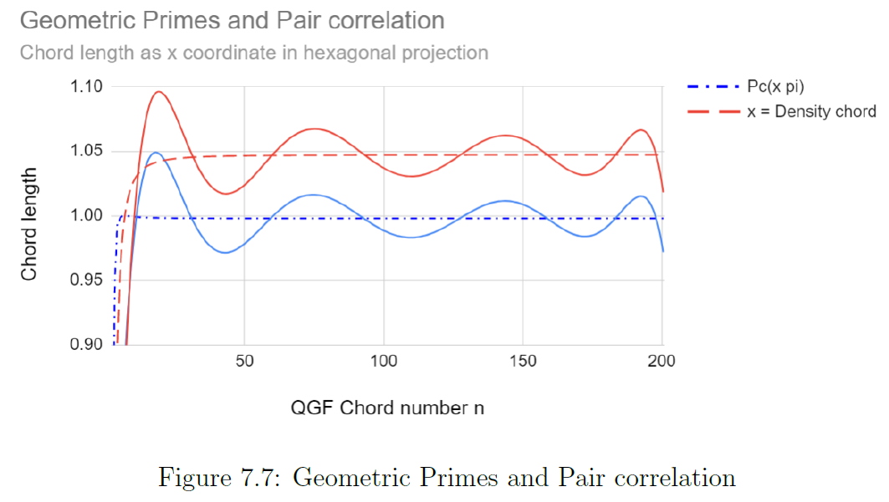

Working notebook — speculative, unfinished, not peer-reviewed.
White Board 01
Explaination of Figure 7.07
F7.07 Geometric primes and Pair correlation
This figure contains two series:
- The bottom series $Pc\left(x\pi\right)=1-\left(\frac{sin\thinspace
\pi x}{\pi x}\right)^{2}$, which is the Montgomery-Dyson formula for pair correlation. This formula describes both the average spacing between any pair non trivial zeros of the zeta function which is discovered by Hugh Montgommery, as also the average spacing between eigenvalues of random hermitian matrices, used in modeling quantum physical systems. A chance discovery made at the Institute of Advanced Studies (IAS) in conversation between Hugh Montgommery and Freeman Dyson. [From Prime Numbers to Nuclear Physics and Beyond][1]
- The top series named 'Density chord', is based on the modulus, or 'absolute value' of the non trivial zeta zeros, $\left|z\right|=\sqrt{Re\left(z\right)^{2}+Im\left(z\right)^{2}}$. This function value of a complex function, is assumed a $D4$ value, and succesively normalized to a $D1$ Real value by $x=\frac{\sqrt[4]{\left|z\right\|}}{\lfloor\sqrt[4]{\left\|z\right\|}\rfloor}$. See table 7.03 Non trivial zero to Unity chord, where the first 25 Non trivial zeros are tabulated, and in the rightmost column '$C_{box}$' the normalized values are listed.
Side note Unity chord : The Riemann conjecture states 'All non trivial zeros have real part one half'. A special property of a hexagon is that the chord length equals the radius, and 'All hexagons have $y=sin\left(x\right)$ for real part $x\in\mathbb{R}=\frac{1}{2}$'. See figure F5.06 Root 2 equilibrium where the real axis base of the unit circle and the orthogonality of the y-axis for $x=\frac{1}{2}$ , ($\overline{{\tiny ACE}}$), is preserved. Hypothesized is that the imaginary non trivial zeta zeros are distorted artefacts of $y=sin\left(\frac{1}{2}\right)$, and therefor F5.06 illustrates how $\|z\|$ (the modulus), and thus the chord length, relate to the imaginary zeta zero.
This dynamic is also captured by the geometric model 'The projection plane - triangular plane' that provides the geometric proof for RH, see figure F5.03 (Table 4.01) and further below, F4.02.
F5.06 Root 2 equilibrium
F5.03 Triangular numbers-chord density
End side note Unity chord
Explaination of Figure 7.10
F7.10 Zeta zero modulus as proportional chord
The set moduli of the non trivial zeta zeros, $$\mathbb{Z_{\left|z\right|}}\rightarrow\forall \thinspace z,\left|z\right|\in\sqrt{Re\left(z\right)^{2}+Im\left(z\right)^{2}}$$
In figure F7.10 the first 950 values are plotted as y-value, $$y= \frac{\sqrt[4]{\sqrt{a^2+bi^2}}}{\left\lfloor\sqrt[4]{\sqrt{a^2+bi^2}}\right\rfloor}$$
The x-axis simply plots the sequence number $n\in\mathbb{N}$, the number of appearance in the unsorted list of non trivial zeta zeros, here up to 950 values.
Geometric primes
The term 'Geometric primes' is for chords of the set of n-gon not immediately obvious, because for each regular n-gon there exist $\#n$ inscribed chords of equal size. This is as if a set of primes exist like $$x\in\mathbb{Z_{0}}\rightarrow\left\{\overset{1=}{\left\{z_{1}\right\}},\overset{2=}{\left\{z_{2},z_{3}\right\}},\overset{3=}{\left\{z_{4},z_{5},z_{6}\right\}},\overset{4=}{\left\{z_{7},\dots,z_{10}\right\}},\overset{5=}{\left\{z_{11},\dots,z_{15}\right\}},\dots\right\}$$
A triangular order that is in fact close to the actual situation, because when we observe $\|z\|$ we find that in the natural order of appearance of consequtive $\|z\|$, a distinct pattern is discernable.
The pattern can be denoted as $$x\in\mathbb{Z_{0}}\rightarrow\left\{\overset{1=}{\left\{z_{1}\right\}},\overset{2=}{\left\{z_{2},z_{3}\right\}},\overset{3=}{\left\{z_{4},z_{5},z_{6}\right\}},\overset{4=}{\left\{z_{7},\dots,z_{10}\right\}},\overset{5=}{\left\{z_{11},\dots,z_{15}\right\}},\dots\right\}$$
This triangular order is the basis of the geometric model, the projection plane - triangular plane, with which in chapter 4 the solution to the Riemann conjecture 'All non trivial zeros have real part one half' will be presented.
F4.02 The projection plane
The triangular order becomes apparent because of an extra grouping in Levels, visible in the distinct pattern as shown in figure F7.10 shown above, where the first **950** $Z_{0}$ are plotted spanning level 0 t/m 4 completely.
Level 0 only holds the first $Z_{0}$, then visible in the increasing magnitude of the x value, Level 1 holds the next 20 $Z_{0}$, after which the x-value drops off, and a new ascending sequence starts, see table T7.03, columns 'Level' and $C_{box}$ below.
The first 2 levels, level 0 and level 1 consists of in total 21 $Z_{0}$. This is significant because the sixth triangular number $T_{6}=1+2+3+4+5+6=21$. i.e., The first 6 n-gons that project inside the bounds of the convex set span level 0 and level 1, see figure F7.03 below.
F7.03 QGF natural state
The circle at n=1 represents $Z_{1}$, (which in fact is the fractal projection of the infinite stack of chords at $n\rightarrow\infty$).
Then successively the 2,3,4,5 and 6-gon follow $\left\{\overset{2-gon}{Z_{2\dots3}}\right\}$,$\left\{\overset{3-gon}{Z_{4\dots6}}\right\}$,$\left\{\overset{4-gon}{Z_{7\dots10}}\right\}$,$\left\{\overset{5-gon}{Z_{11\dots15}}\right\}$,$\left\{\overset{6-gon}{Z_{16\dots21}}\right\}$.
This all, ofcourse, means that $\forall\thinspace n\in \mathbb{N}$ , any given n is distributed in n parts.
As a side note to this distribution: This distribution lays at the basis of the particle repulsion problem, and the solution to the particle repulsion question is in fact the solution to the validity of the continuum hypothesis. In chapter 3, The primorial function, a method is derived that provides a counter example to the continuum hypothesys.
The crux is that there is an equivalence between $\mathbb{Q}$ and $\mathbb{R}$ such that rational values have a diffusely distributed set of counterparts in real values. There is a topological distinction, but also a one to one correspondence between $\mathbb{Q}$ and $\mathbb{R}$, which makes $\mathbb{R}$ by association countable infinite.
Geometric QGF model versus physical Convex set
In figure F7.03 the geometric continuation will clearly disapear to the right and projects to the limit at which we find the 'n-gon' at $n\rightarrow\infty$, which can be viewed as an infinit stack of chords orthogonal to the x-axis, or as the circle at x=1.
That circle has a circumference of $2\pi\thinspace r=2\pi$. The circle itself has therefor a circumference the size of one chord at infinity, the other chords can be found, but that becomes clear as we locate the chords for the n-gon $\text{n7 to n}\infty$ that geometrically project outside the bounds of the QGF convex set.
The QGF must be true because
**The following construct can only occur in the physical (natural state) setting of a closed system with infinite elastic boundary conditions.
This is an experimentally observed property which is modelled with Gaussian Hermitian matrices and therefor MUST confirm the validity of the QGF model!**
The necessary assumption must be that the calculated geometric chords, DO exist as a stack of chords cramped against the maximum elastic boundary of some physical complete convex set, the universe.
The individual geometric n-gon consist of chords that have a maximum size of $\underset{n\rightarrow\infty}{Lim}\thinspace 2n\cdot sin\left(\frac{2\pi}{2n}\right)=2\pi$.
The chord length represents in physical sense the wave length spanning one(1) chord. The n-gon represent standing waves in a particle in a box configuration that for each n-gon projects at coordinate $$\forall\thinspace n>=7,\thinspace x=\frac{2n\cdot sin\left(\frac{2\pi}{2n}\right)}{\left\lfloor 2n\cdot sin\left(\frac{2\pi}{2n}\right)\right\rfloor}=\frac{\left<6,2\pi\right]}{6}\rightarrow \rho _{n}=\left<1,\frac{\pi}{3}\right]\text{ (normalized)}$$
Because at $x=\rho _{n}\text{ (normalized)}$ the (chord length) waves with density $\rho _{n}$ occupy a hexagonal snare where only 6 such waves fit the orbit ([resembling a de Broglie wave configuration][2]).
The orbits that contain $n\\,mod\\,6=0$ experience constructive interferance. Other orbits that contain $n\\,mod\\,6<>0$ experience pertubation by a remainder of $\rho _{n}=n-\left\lfloor\frac{n}{6}\right\rfloor$ waves traversing the hexagonal snare.
(this perturbation can cause a spectrum of constructive or destructive interferance which can alter local density conditions such that resonance can cause waves to jump strings, thus enabling a system resembling particle/wave interaction). See table T7.02 below for chords, relative density and surplus.